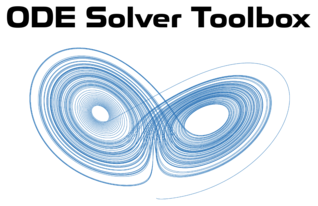

ODE Solver Toolbox Documentation

Copyright © 2021 Tamas Kis
Contents
EXAMPLES
Since all of the functions have an identical syntax, only one set of examples is included. These examples use the RK4 function, but could also be solved using any of the other solver functions in this toolbox.
Single-Step Methods
- euler Euler method (1st-order).
- RK2 Midpoint method (2nd-order).
- RK2_heun Heun's second-order method (2nd-order).
- RK2_ralston Ralston's second-order method (2nd-order).
- RK3 (Kutta's) Runge-Kutta third-order method (3rd-order).
- RK3_heun Heun's third-order method (3rd-order).
- RK3_ralston Ralston's third-order method (3rd-order).
- SSPRK3 Strong stability preserving Runge-Kutta third-order method (3rd-order).
- RK4 (Classic) Runge-Kutta fourth-order method (4th-order).
- RK4_ralston Ralston's fourth-order method (4th-order).
- RK4_38 3/8-Rule fourth-order method (4th-order).
Generating ODE Solver Equations
- AB_coefficients Coefficients for the nth-order Adams-Bashforth predictor.
- AM_coefficients Coefficients for the nth-order Adams-Moulton corrector.
- AB_predictor nth-order Adams-Bashforth predictor.
- AM_corrector nth-order Adams-Moulton corrector.
- ABM_equations nth-order Adams-Bashforth-Moulton equations.
- tableau2eqns Propagation equations from Butcher tableau for explicit Runge-Kutta methods.